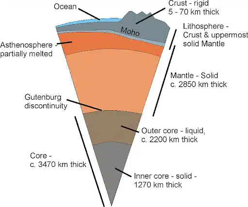

यह सिद्धांत वैज्ञानिकों द्वारा सबसे अधिक स्वीकार किया गया है।
लगभग 13.8 अरब वर्ष पहले एक अत्यधिक घना, गर्म और छोटा बिंदु था जिसे "सिंगुलैरिटी (Singularity)" कहते हैं।
इसी से एक विशाल विस्फोट (Big Bang) हुआ जिससे समय, स्थान, ऊर्जा और पदार्थ की शुरुआत हुई।
धीरे-धीरे गैस और धूल के बादल बने, जिनसे आकाशगंगाएँ, तारे और ग्रह बने।
Big Bang एक "धमाका" नहीं बल्कि एक तेज़ी से फैलाव था।
| चरण | घटनाएँ |
|---|---|
| 13.8 अरब वर्ष पहले | बिग बैंग – ब्रह्मांड की उत्पत्ति |
| 4.6 अरब वर्ष पहले | सौरमंडल का निर्माण |
| 4.5 अरब वर्ष पहले | पृथ्वी का निर्माण |
| 4.4 अरब वर्ष पहले | वायुमंडल और महासागर |
| 3.5 अरब वर्ष पहले | जीवन की उत्पत्ति |
| 2.5 अरब वर्ष पहले | ऑक्सीजन का उद्भव (Photosynthesis) |
| 500 मिलियन वर्ष पहले | जलीय और थलीय जीव |
| 200 मिलियन वर्ष पहले | डायनासोर |
| 65 मिलियन वर्ष पहले | डायनासोर का विनाश |
| 2 लाख वर्ष पहले | आधुनिक मानव (Homo sapiens) का उद्भव |
भूपर्पटी पृथ्वी की सबसे ऊपरी और सबसे ठोस परत होती है। यह पृथ्वी की कुल संरचना का बहुत छोटा हिस्सा है, लेकिन इसी पर हम रहते हैं और यह हमें जीवन जीने के लिए ज़रूरी ज़मीन और खनिज देती है।
| 🔹 विशेषता | 🔸 विवरण |
|---|---|
| स्थिति | पृथ्वी की सबसे ऊपरी परत |
| मोटाई | 5 से 70 किलोमीटर के बीच |
| घनत्व | सबसे कम (2.7 से 3.0 g/cm³) |
| तापमान | सतह पर ठंडी, गहराई में गर्म |
| रचना | चट्टानें, खनिज, मिट्टी |
| तत्त्व | सिलिकॉन (Si), ऑक्सीजन (O), एल्युमिनियम (Al), लोहा (Fe), कैल्शियम (Ca), पोटैशियम (K), सोडियम (Na) |
भूपर्पटी के अंदर विभिन्न प्रकार की चट्टानें पाई जाती हैं:
मेंटल पृथ्वी की दूसरी परत है, जो क्रस्ट (भूपर्पटी) के ठीक नीचे और कोर (core) के ऊपर स्थित होती है। यह पृथ्वी के कुल आयतन का लगभग 84% हिस्सा बनाती है।

| 🔹 विशेषता | 🔸 विवरण |
|---|---|
| स्थान | क्रस्ट और कोर के बीच |
| मोटाई | लगभग 2,900 किलोमीटर |
| संघटन | सिलिकेट्स, मैग्नीशियम (Mg), लोहा (Fe) |
| तापमान | 500°C से लेकर 4,000°C तक |
| अवस्था | ऊपरी भाग ठोस (Solid), नीचे की ओर अर्धद्रव (Semi-liquid) |
| परतें | 1. ऊपरी मेंटल (Upper Mantle) 2. निचला मेंटल (Lower Mantle) |
कोर पृथ्वी की सबसे अंदर की परत (innermost layer) है। यह अत्यधिक गर्म और घने धात्विक पदार्थों से बनी होती है और पृथ्वी के कुल द्रव्यमान का लगभग 33% हिस्सा बनाती है।
पृथ्वी का कोर दो भागों में बँटा हुआ है:
| 🔹 विशेषता | 🔸 विवरण |
|---|---|
| अवस्था | द्रव (Liquid) |
| घटक तत्त्व | मुख्यतः लोहा (Iron) और निकेल (Nickel) |
| गहराई | लगभग 2,900 किमी से 5,100 किमी तक |
| तापमान | लगभग 4,000°C से 6,000°C तक |
| विशेषता | इसी की गति से पृथ्वी का चुंबकीय क्षेत्र (Magnetic Field) बनता है |
| 🔹 विशेषता | 🔸 विवरण |
|---|---|
| अवस्था | ठोस (Solid) |
| संरचना | मुख्य रूप से लोहा और निकेल का घना गोला |
| गहराई | लगभग 5,100 किमी से 6,371 किमी (पृथ्वी का केंद्र) |
| तापमान | 6,000°C या उससे अधिक, फिर भी भारी दबाव के कारण ठोस |
| 🔹 विशेषता | 🔸 विवरण |
|---|---|
| स्थिति | पृथ्वी के सबसे अंदर |
| भाग | बाहरी कोर (द्रव), आंतरिक कोर (ठोस) |
| तापमान | 4,000°C – 6,000°C या अधिक |
| मुख्य तत्त्व | लोहा (Fe), निकेल (Ni) |
| चुंबकीय क्षेत्र | बाहरी कोर की गति से उत्पन्न |
| घनत्व | सबसे अधिक (10–13 g/cm³ तक) |